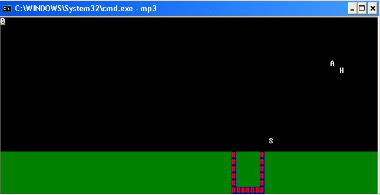

<%
title = "ECE 291 - MP3"
subtitle = "MP3"
%>
Machine Problem 3: Falling Alphabet Fun!
| Assigned |
Thursday, 10/1/03 |
| Due Date |
Thursday, 10/15/03 |
| Purpose |
Install and write timer and keyboard interrupts. Use polling
for parallel port inputs. Use text mode video. Have fun. |
| Points |
80 |
"Y2K, we're not familiar with that. However in regard to the
"Millennium Bug"---not to worry my friend, we are prepared to spray
everywhere."
One of the comments made at http://www.duh-2000.com/
Changes made : 10/2/03
InitParport : Set Strobe
bit on the control port to 0 value to output a HIGH voltage on the strobe pin.
In NumberTable add a 'G' to the end
of Eight to get:
eight db A|B|C|D|E|F|G
In ReadParport the bits 4/5 of the
status port will be 0 when the buttons are pressed, and 1 when the buttons are
not pressed
Changed KbdISR infomation so it made
more sense
Added section with information about
the FallingLetterArray.
Introduction
This MP introduces the routines of writing a functional game, using interrupts
and polling methods to await user inputs. Parallel input/output is also
introduced here, as well as text mode video.
Problem Description
Your program is required to:
-
Install and uninstall a timer and keyboard ISR
-
Code keyboard ISR
-
Use text mode video to display on the screen
-
Use and understand parallel port inputs/outputs
-
Display an understanding on how to write a main function
Reading : Chapter 10, 11 and 13 (I/O Devices, Graphics and Parallel
Communications)

MP3 Program Assignment
In this machine problem, the main procedure is provided for you; however, you
must write the code to replace the library procedures. You will replace these
procedures from the LIBMP3 library by commenting out the statements calling the
library procedure and adding your code. Each procedure that you write should
match the output of the library code exactly. Each of the function calls and
their functionality is described below in the Procedures section. The
best way to get a feel for the program is to run it to see how it is supposed
to operate. You can also edit the test file to see how various changes will
affect the program execution.
The program can be run by typing mp3 at the command prompt. If
can use the right and left arrow keys to move the bucket right and left, and
ESC to quit. If you enable the parallel port you can move the
bucket with the buttons on the test board.
The parallel port and the test board
To complete the part of the mp that uses the parallel port you need to have a
test board. There should be a test be a test board connected to
every computer in the lab. If you run mp3 with the parallel port on, the
test board should display the level and also allow control of the bucket with
the buttons on the test board. Please leave the boards in the lab, there
is not enough of them for every student to taken one home. Much
of mp3 can be completed entirely without using the test board, by not
enabling the parallel port when starting.
If you have problems getting the test board to work:
-
Use the BOARDTEST program that is provided with the mp.
-
Try a different computer. If the the BOARDTEST program works on that computer
let a TA know so it can be fixed.
-
If you are sure that the test board itself is broken, put it on the front
chalkboard so it can be fixed.
FallingLetterArray
The falling letter array is used to store the row, column and ASCII character
of the falling letters in the game. Each element in the array is 3 bytes
the first byte is the letter's value (CHAR), the second byte is the row of the
letter (ROW), and the third byte is the column of the letter (COL). When
an element in the array is not in use, the CHAR value of the letter will be 0.
Hints
-
In this MP, the falling alphabets objects and its attributes are stored in an
array. This array contains 3 attributes, CHAR value, ROW value and COL value.
Use a pointer to transverse down the array when adding or updating the array.
-
Movement in this MP is stored in a byte-sized memory called Flags.
-
Flags contain 6 useful bits in which information about movement is
stored.
-
Bit 0 - Set on Exit
-
Bit 1 - Set when Right Keyboard Button is pressed
-
Bit 2 - Set when Left Keyboard Button is pressed
-
Bit 3 - Set when Right Parallel Button is pressed
-
Bit 4 - Set when Left Parallel Button is pressed
-
Bit 5 - Set when Parallel Port is used
-
A Random function is provided for you
-
Input - CX : Range of Values that Random should return
-
Output - AX : Random Value returned
-
Notes : Returns a value from 0 to the range as stated by CX
-
The LIBMP3 file contains executable library functions for each of the routines
that you need to implement. This allows you to run the program and understand
how it works before you implement it. You can test your program with any
combinations of your own code and library functions. You will only receive
credit, however, for the routines that you implement yourself.
-
When debugging your code in TD, you will find it helpful to use the memory
window to show you the memory location of the file and strings. You can also
use the watch window to keep track of variables in your code.
-
Do not assume that the file starts at memory location 0.
-
You may define new variables as needed.
-
Be very careful if you call another procedure not to destroy registers that the
calling procedure uses.
-
START EARLY!
There are a total of 14 functions you have to write, including the main
function. You will be writing the main function in this MP, and points
will be awarded accordingly to how you separate your functions.
-
You need to preserve register values in all of the procedures
you write. To do this, push all the registers you use in the procedure at
the beginning of the procedure. Then, pop them all in reverse order at
the end of the procedure (right before you return).
-
You need to create function headers for each of the functions you write.
Function headers should include the name of the function, the list of inputs to
the function, the list of the outputs, and any functions that the function
calls. You will lose points if you do not do this!
-
We provided you with a timer ISR. Take a look at the code, it may make writing
the keyboard ISR much more simple.
-
Monitor the webboard for
clarifications and help.
Procedures
This assignment has four procedures. You will receive credit by replacing each
of these four procedures listed below with your own code.
| InitVideo |
-
Initialize mode 03h text
mode video.
-
Inputs:
-
Outputs:
-
Calls: int 10h
-
Notes:
-
Set screen to 03h video
mode
-
Clear screen to black
background
-
Section 11.3 (page 113) of
the lab manual has information on setting the video mode
-
Points: 5
|
| InstallISR |
-
Saves the old interrupt service routines and installs the modified timer and
keyboard service routines.
-
Inputs: cs, TmrISR, KbdISR, Interrupt vector table
-
Outputs: Interrupt Vector
Table, SavKSeg, SavKOff, SavTSeg, SavTOff = addresses of old interrupt vector
segments and offsets
-
Calls: None
-
Notes:
-
There are two ways to
install the interrupts, accessing the interrupt vector table directly,
or using INT 21h to do some of the work for you. Writing the
interupt table directly was covered in class Do NOT use INT 21
to install the ISR!
-
Use 0x1C for the timer
interrupt and 0x09 for the keyboard interrupt
-
Remember you MUST disable
interrupts while changing the interrupt vector table (using the
STI and CLI instructions).
-
Points: 7
|
| RestoreISR |
-
Restores the old keyboard
and timer interrupt service routines.
-
Inputs: SavKSeg, SavKOff, SavTSeg, SavTOff = addresses of old interrupt vector
segments and offsets
-
Outputs: Interrupt Vector
Table
-
Calls: None
-
Notes:
-
There are two ways to
install the interrupts, accessing the interrupt vector table directly,
or using INT 21h to do some of the work for you. Writing the
interupt table directly was covered in class Do NOT use INT 21
to install the ISR!
-
Remember you MUST disable
interrupts while changing the interrupt vector table (using the
STI and CLI instructions).
-
Points: 5
|
| KbdISR |
-
Interrupt service routine to handle keyboard interrupt events
-
Inputs:
-
Outputs:
-
Calls:
-
Notes:
-
Read scancode from keyboard port
-
When it is the scancode for a left arrow press, set
the LEFT_KEY_FLAG (to 1) in [Flags]
-
When it is the scancode for a right arrow press, set
the RIGHT_KEY_FLAG (to 1) in [Flags]
-
When it is the scancode for a left arrow release,
clear the LEFT_KEY_FLAG (to 0) in [Flags]
-
When it is the scancode for a right arrow release,
clear the RIGHT_KEY_FLAG (to 0) in [Flags]
-
Checks if ESC is pressed, set the the EXIT_FLAG in
[Flags]
-
See Hints section for implementation of [Flags]
-
Acknowledge PIC (port 20h)
-
Remember that the DS is undefined when your interrupt service routine gets
triggered
-
Section 10.1.2 of the lab manual has sample code that may be helpful take take
a look at
-
Points: 8
|
| InitParport |
-
Initializes the parallel port so that it can be used
-
Inputs: None
-
Outputs: Control port (0x37a)
-
Calls: None
-
Notes:
-
This function is only call
if using the parallel input and output is enabled
-
Set/Clear the necessary bit(s) of the control port (0x37A) to put the data pins
in output mode.
-
Set/Clear the necessary bit(s) of the control port (0x37A) to have the strobe
pin to output a
HIGH value
by setting the strobe bit on the control port
LOW
-
Sometimes the control port already has the right settings, to make sure your
program works for sure you can try setting with debug and then testing your
program
-
Points: 5
|
| ReadParport |
-
Reads in the input from the parallel port
-
Inputs:
-
Outputs:
-
Calls:
-
Notes:
-
Reads the status value from the Status Port (0x379).
-
Checks if the if buttons are pressed by reading PaperEnd (bit 5 of status port)
and SelectIn (bit 4 of status port)
-
When the Right button is pressed the PaperEnd bit
of the status port will be
LOW.
-
When the Left button is pressed the SelectIn bit of the
status port will be
LOW.
-
When the Right/Left button is pressed on the test board set the
RIGHT_BUTTON_FLAG/LEFT_BUTTON_FLAG of [Flags] variable.
-
See Hints section for implementation of [Flags]
-
Points: 7
|
| OutputParport |
-
Outputs the level onto the 7 segment LED on the parallel port.
-
Inputs:
-
[Level] - current level of the game
-
NumberTable - lookup table
-
Outputs:
-
Writes to data port (0x378)
-
Calls: None
-
Notes:
-
We have already given you the values need to display a digit correctly in the
test board, in the NumberTable. Each entry in the number table is the
byte you would need to write to the data port to display that number. For
example if you wanted to display a '5' to the test board you would output
[NumberTable + 5] to the data port.
-
You MUST use the NumberTable as a lookup table,
DO NOT
use 10 compare statements in the code. Using the NumberTable as a lookup
table is very simple, it should take less than 10 lines (excluding pushing and
popping) of code to do.
-
Points: 8
|
| DisplayBucket |
-
Draw image of bucket to correct part of the screen
-
Inputs:
-
[BucketPosition] - current position of the bucket
-
Outputs:
-
Calls:
-
Notes:
-
Print a bucket 7 characters wide and 6 characters deep on the bottom of
the screen.
-
Write directly to video memory to display this bucket.
-
See the game demo on how the bucket looks like.
-
Points: 5
|
| UpdateBucket |
-
Updates the position of the bucket
-
Inputs:
-
Outputs:
-
[BucketPosition] - current position of the bucket
-
Calls:
-
Notes:
-
Checks the LEFT_KEY_FLAG and the LEFT_BUTTON_FLAG bits of [Flags], and moves
the bucket to the left.
-
Checks the RIGHT_KEY_FLAG and the RIGHT_BUTTON_FLAG bits of [Flags], and moves
the bucket to the right.
-
See Hints section for implementation of [Flags]
-
Points: 5
|
| AddNewLetter |
-
Adds a new letter on top of the screen
-
Inputs:
-
Outputs:
-
Calls:
-
Notes:
-
First, the function checks through the particle array to look for an empty
particle (an
empty letter's CHAR will be 0)
-
Give this particle a random column value from 5 to 75
-
Gives this letter a random value from 'A' to 'Z'
-
Points: 7
|
| FallLetters |
-
Make the letter fall, and checks if the bucket catches the letter.
-
Inputs:
-
[BucketPosition] - current position of the bucket
-
Outputs:
-
Calls:
-
Notes:
-
For each letter in the array
- If the CHAR for the letter is 0 skip that
letter.
- Erase the letter from the screen at its current
position
- Increment the ROW of the letter.
- Draw the letter onto the screen at its new
position
- If the letter is on the bottom of the screen
- Kill the letter by setting the CHAR of the
letter to 0
- Check if the Bucket is below the letter, and increase the Level by 1
-
Points: 8
|
| DisplayLevel |
-
Display the level on the top left corner of the screen
-
Inputs:
-
Outputs:
-
Calls:
-
Notes:
-
Write directly to video memory to display the level.
-
Display the level on the top left corner of the
screen
-
You only need to worry about displaying 0-9 for the
Level.
-
Points: 2
|
| ClearScreenBottom |
-
Clears the bottom of the screen.
-
Inputs:
-
Outputs:
-
Calls:
-
Notes:
-
Clears the bottom 6 rows of the screen, and sets it to a nice green color.
-
Points: 5
|
| Main |
-
Main Function
-
Inputs:
-
Outputs:
-
Calls:
-
dspmsg, kbdine, InitParport, InitParport, InstallISR, InitVideo, ReadParport,
OutputParport, UpdateBucket, DisplayLevel, ClearScreenBottom, FallLetters,
DisplayBucket, AddNewLetter, Random, RestoreISR, mp3xit
-
pseudo-code is given below:
Display StartMsg
Prompts user to enter keyboard/parallel preference.
Sets/Resets USE_PARPORT_FLAG in [Flags] accordingly.
See Hints section for implementation of [Flags]
If (parallel port is selected)
call InitParport
call InstallISR
call InitVideo
MainLoop:
// This loops runs until ESC is pressed, or when the game reaches past level 9
if (TickCount < 2) {
loop back to MainLoop }
TickCount = TickCount -2
if (Parallel Port is selected) {
call ReadParport,
OutputParport }
call UpdateBucket, DisplayLevel, ClearScreenBottom, DisplayBucket
in succession
FallCount ++
if (FallCount >=9) {
FallCount = 0
call FallLetters }
Randomly call AddNewLetter // show
how you randomly do this
loop back to MainLoop
if (game reaches past level 9)
display WinMsg
if ESC is pressed, or when game reaches past level
call RestoreISR
Points : 8
|
Procedure
-
You will begin this MP with the following files:
-
MP3.ASM: Program Framework
-
Makefile: Specifies how and when programs are assembled and
linked.
-
LIBMP3.LIB: Library functions for MP3
-
LIB291.LIB: General-purpose library functions
-
You may copy these files from the network drive to your home directory with the
following command:
xcopy /s V:\ece291\mp3 W:\mp3
or download the files from this server as mp3.zip
-
Add your code to MP3.ASM.
-
Assemble and link your program by typing make. This command
reads the Makefile then invokes NASM and TLINK to build an executable program.
-
Use TD debugger to find and correct program errors.
Final Steps
-
Demonstrate your MP3.EXE to a TA or to the instructor. The TA or
instructor will verify that your program produces the correct output.
-
Be prepared to answer questions about any aspect of the operation of your
program. The TAs will not accept an MP if you cannot fully explain the
operation of your code and details of your implementation. Delayed MPs will be
subject to late penalties as described in the course syllabus (10%/day).
-
The TA will handin your MP online.
MP1.ASM (program framework)
;MP3 -Falling Alphabets
; Your Name
; Today's Date
;
; Author: 2003
; Derek King
; Wee Horng Ang
; University of Illinois, Urbana-Champaign
; Dept. of Electrical and Computer Engineering
;
; Version 1.0
BITS 16
;====== SECTION 1: Define constants =======================================
Escape EQU 1Bh
CR EQU 0Dh ; Carriage return
LF EQU 0Ah ; Line feed
BS EQU 08h ; Backspace
KVEC EQU 0024h ; Location of Keyboard Vector
TVEC EQU 0070h ; Location of User Timer Vector
ROWS EQU 25 ; Number of rows on screen
COLS EQU 80 ; Number of columns on screen
;the masks for various flags
EXIT_FLAG equ 000001b
RIGHT_KEY_FLAG equ 000010b
LEFT_KEY_FLAG equ 000100b
RIGHT_BUTTON_FLAG equ 001000b
LEFT_BUTTON_FLAG equ 010000b
USE_PARPORT_FLAG equ 100000b
;length of array (in elements) use to store letters to
FALLING_LETTER_ARRAY_LENGTH equ 5
CHAR EQU 0
ROW equ 1
COL equ 2
;The scancodes for various keys
LEFT_SCANCODE equ 75 ;scancode for left arrow
RIGHT_SCANCODE equ 77 ;scancode for right arrow
EXIT_SCANCODE equ 1 ;scancode for esc key
;====== SECTION 2: Declare external procedures ============================
EXTERN ascbin, binasc, kbdin, kbdine, dspout, dspmsg, mp3xit
EXTERN libMain, libInstallISR, libRestoreISR, libInitVideo, libKbdISR
EXTERN libOutputParport, libUpdateBucket, libDisplayLevel, libClearScreenBottom
EXTERN libRandom, libAddNewLetter, libDisplayBucket, libFallLetters
EXTERN libInitParport, libReadParport
GLOBAL Main, InstallISR, RestoreISR, InitVideo
GLOBAL TmrISR, KbdISR
GLOBAL OutputParport, UpdateBucket, DisplayLevel, ClearScreenBottom
GLOBAL Random, AddNewLetter, DisplayBucket, FallLetters
GLOBAL InitParport, ReadParport
GLOBAL SavKOff, SavKSeg, SavTOff, SavTSeg, TickCount
GLOBAL StartMsg, Flags, Level, FallCount, WinMsg
GLOBAL FallingLetterArray, NumberTable, BucketPosition
;====== SECTION 3: Define stack segment ===================================
SEGMENT stkseg STACK ; *** STACK SEGMENT ***
RESB 64*8
stacktop:
RESB 0 ; NASM bug workaround
;====== SECTION 4: Define code segment ====================================
SEGMENT code ; *** CODE SEGMENT ***
;====== SECTION 5: Declare variables for main procedure ===================
MP3Msg db 'ECE 291 MP3 -- The Falling Letters Game','$'
WinMsg db 'YOU WIN!!','$'
StartMsg db "Do you want to enable the parallel port? (y/n)", '$'
TickCount db 0 ;Timer interupt counter
FallCount db 0 ;Counter to slow letter movement
Level db 0 ;Level of game, goes from 0 to 9
BucketPosition db 40 ;Column of left side of bucket
Flags db 0 ;Storage for various flags used by the game
SavTSeg RESW 1 ;Segment of old timer interupt routine
SavTOff RESW 1 ;Offset of old timer interupt routine
SavKSeg RESW 1 ;Segment of old timer interupt routine
SavKOff RESW 1 ;Offset of old timer interupt routine
;array of infomation for falling letters
FallingLetterArray times FALLING_LETTER_ARRAY_LENGTH*3 db 0
;used by random function
seed RESW 1
random RESW 1
;
C equ 0x01
D equ 0x02
E equ 0x04
G equ 0x08
F equ 0x10
A equ 0x20
B equ 0x40
;Lookup table used for turning on LED's
NumberTable:
zero db A|B|C|D|E|F
one db B|C
two db A|B|D|E|G
three db A|B|C|D|G
four db B|C|F|G
five db A|C|D|F|G
six db A|C|D|E|F|G
seven db A|B|C
eight db A|B|C|D|E|F
nine db A|B|C|F|G
; You may declare additional variables here
;====== SECTION 6: Program initialization =================================
..start:
MOV AX, CS ; Initialize Default Segment register
MOV DS, AX
MOV AX, stkseg ; Initialize Stack Segment register
MOV SS, AX
MOV SP, stacktop ; Initialize Stack Pointer register
;====== SECTION 7: Your subroutines =======================================
;- Main ----------------------------------------------------
Main:
call libMain
call mp3xit
;- InitParport ----------------------------------------------------
InitParport:
call libInitParport
ret
;- ReadParport ----------------------------------------------------
ReadParport:
call libReadParport
ret
;- OutputParport ----------------------------------------------------
OutputParport:
call libOutputParport
ret
;- UpdateBucket ----------------------------------------------------
UpdateBucket:
call libUpdateBucket
ret
;- AddNewLetter ----------------------------------------------------
AddNewLetter:
call libAddNewLetter
ret
;- FallLetters ----------------------------------------------------
FallLetters:
call libFallLetters
ret
;- DisplayLevel ----------------------------------------------------
DisplayLevel:
call libDisplayLevel
ret
;- DisplayBucket ----------------------------------------------------
DisplayBucket:
call libDisplayBucket
ret
;- ClearScreenBottom ----------------------------------------------------
ClearScreenBottom:
call libClearScreenBottom
ret
;- KbdISR ----------------------------------------------------
KbdISR:
jmp libKbdISR
;- InstallISR ----------------------------------------------------
InstallISR:
call libInstallISR
ret
;- RestoreISR ----------------------------------------------------
RestoreISR:
call libRestoreISR
ret
;- InitVideo ----------------------------------------------------
InitVideo:
call libInitVideo
ret
;- TmrISR ----------------------------------------------------
;- Inputs: NONE
;- Outputs: TickCount - interrupt counter
;- Calls: NONE
TmrISR:
inc byte [cs:TickCount] ;increment TickCount :-P
.done
iret ;return from interupt :-)
;- Random ----------------------------------------------------
;- Inputs: CX = Max value to return
;- Outputs: AX = random value in range from (CX-1) to 0
;- Calls: NONE
Random
push dx
push bx
mov ax, word [seed]
mov bx, 37549
mul bx
add ax, 37747
adc dx, 0
mov bx, 65535
div bx
mov ax, dx
mov word [seed], dx
xor dx, dx
div cx
mov ax, dx
pop bx
pop dx
ret